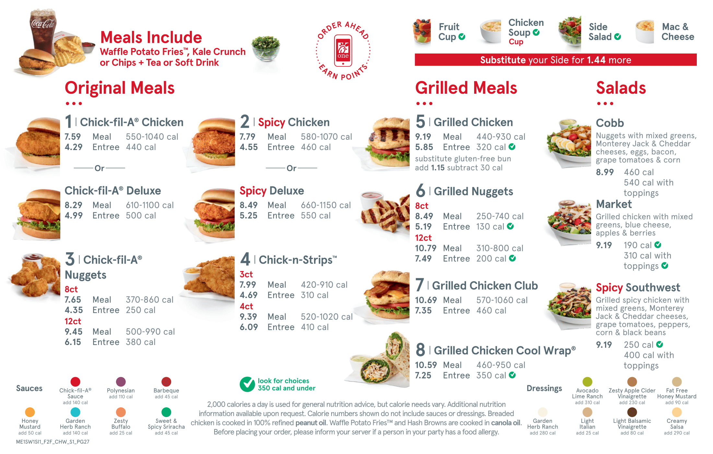
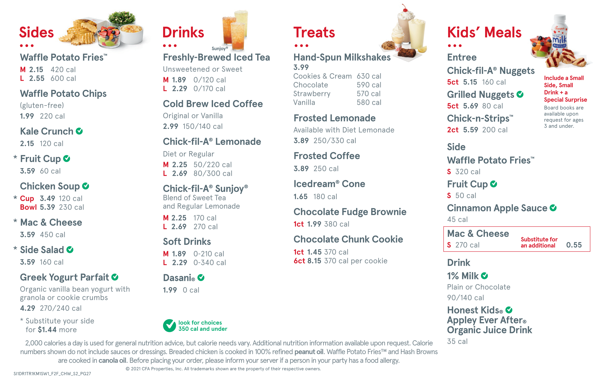
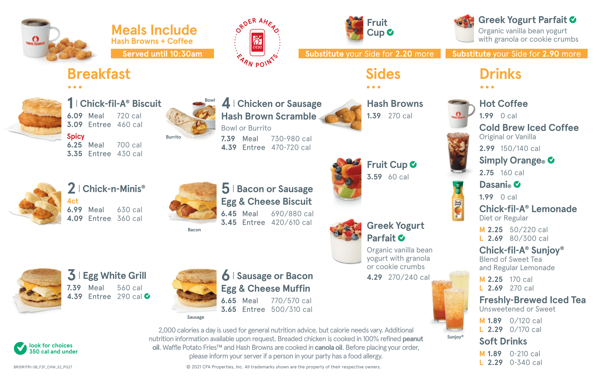

<div class="container">
    <a name="top"></a>
    <button mat-icon-button *ngIf="windowScrolled" class="fab" (click)="scrollToTop()"><mat-icon style="color: white;">arrow_upward</mat-icon></button>
    <div *ngIf="windowScrolled" class="fab-text">Back to top</div>
    <button mat-raised-button color="primary" style="position: absolute; left: 10px; top: 75px; width: 150px;" routerLink="/">
        <!-- <mat-icon style="margin-left: -10px; margin-right: 10px; color: white;">arrow_back</mat-icon> -->
        Home</button>
    <div class="menu">
        <button mat-raised-button color="accent" (click)="scrollToBreakfast()">Breakfast Menu</button>
    </div>
    <div style="justify-content: center; align-items: center; text-align: center;">
        <br>
        <p style="font-weight: bold; margin: 10px;" name="lunch">Lunch Menu</p>
        <br>
        
        
        <br>
        <a name="breakfast" id="breakfast"></a>
        <br><br><br><br>
        <div class="menu2">
            <button mat-raised-button color="accent" (click)="scrollToTop()">Lunch Menu</button>
        </div>
        <p style="font-weight: bold; margin: 10px;">Breakfast Menu</p>
        <br>
        
    </div>
</div>